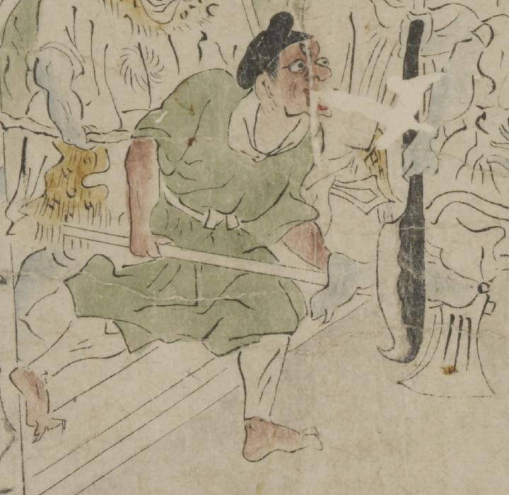

茶色の肌の三つ目の鬼。黒い頭巾をかぶり、目玉と鼻が大きく、口を大きくあけている。額の中央に3つめの目玉が縦についている。緑色の着物に、白色の脚絆を着けている。両腕で斧を持っている。
著作者：坂本弥一郎徳定／出典：親書誌：U426_nichibunken_0080：伊吹山酒呑童子絵巻；イブキヤマシュテンドウジエマキ／日付：2007／資源識別子：U426_nichibunken_0080_0001_0008
Copyright (c)2010- International Research Center for Japanese Studies, Kyoto, Japan. All rights reserved.